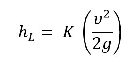
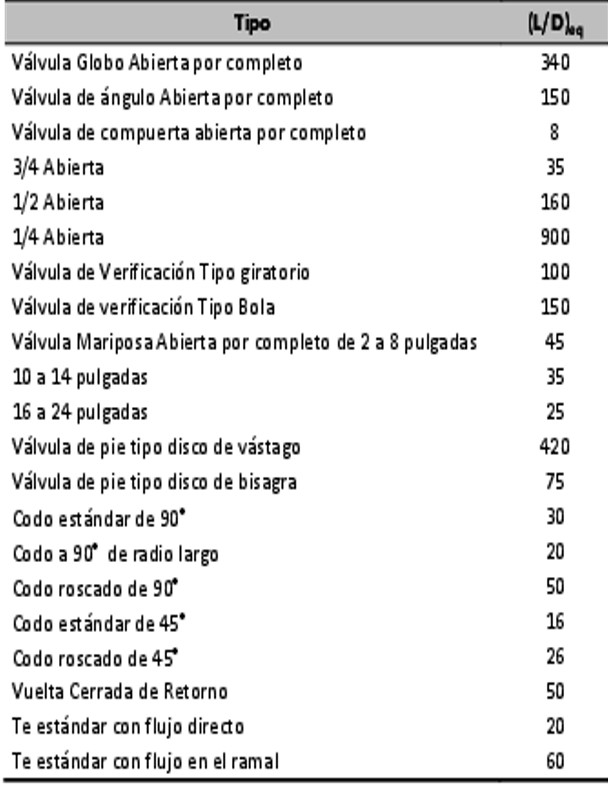

Ocurren pérdidas de energía provocada por obstrucciones, cambios locales de la sección o cambios abruptos de dirección en la trayectoria del flujo. Estas obstrucciones pueden ser como: filtros, válvulas, medidores, codos, accesorios de cruceros o cualquier obstrucción que encuentre el agua que le impida seguir circulando en línea recta. Las pérdidas de energía son proporcionales a la carga de velocidad del fluido, Por lo general los valores experimentales de las pérdidas de energía se reportan en términos de coeficiente de resistencia K.
Para determinar la perdida que se genera se necesita K que es el coeficiente de resistencia y que es la velocidad promedio del flujo en el tubo.
El coeficiente de resistencia K, es adimensional porque este representa una constante de proporcionalidad entre la perdida de energía y la carga de velocidad.

Donde:
·       : es la velocidad (m/s).
·       g: es la gravedad (m/s2).

Nota: Perdidas por fricción en tubería (2020) por Fesmex Fluid equipment supply. Recuperado dehttp://www.fesmex.com.mx/article/perdidas-por-friccion-en-tuberias/
Pérdidas de carga localizadas o en accesorios(2017). Hidráulica fácil por Jiménez, S. Recuperado de https://www.hidraulicafacil.com/2017/07/perdida-de-carga-localizada-o-en.html.